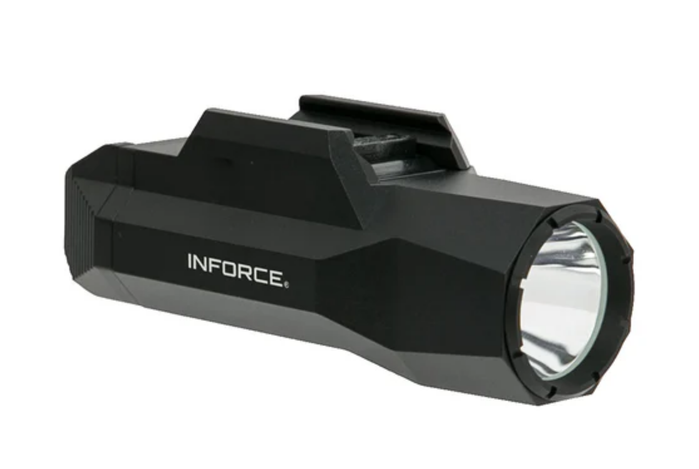

Distribuidor Oficial Petram
Oferta ativa 28% OFF
Lanterna INFORCE WILD2
Desempenho profissional para defesa e operacoes taticas. Plataforma robusta, operacao ambidestra e feixe de alta intensidade para cenarios de baixa visibilidade.
R$3.200,00
R$2.290,00
Economize: R$910,00
3 x de R$763,33 sem juros
Oferta sujeita a disponibilidade de estoque no lote promocional.

Metricas Operacionais
Saida de luz
1000 Lumens
Candela
25.000
Distancia
316m / 1036ft
Autonomia em alta
1,5 horas
Feixe definido com ponto quente equilibrado e dispersao lateral funcional para controle de ambiente.